Projects
Personal
.dotfiles
Ricing, dotfiles, wallpapers and more from my current setups.
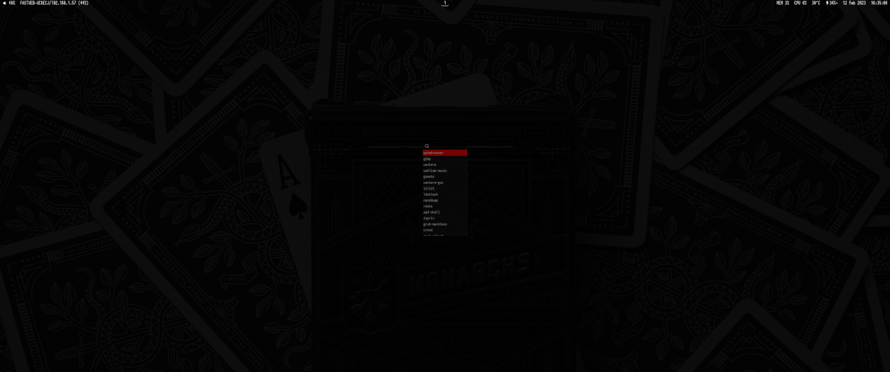foxyseta
The repository containing my public profile's README.
foxyseta.github.io
My personal webpage on GitHub Pages.
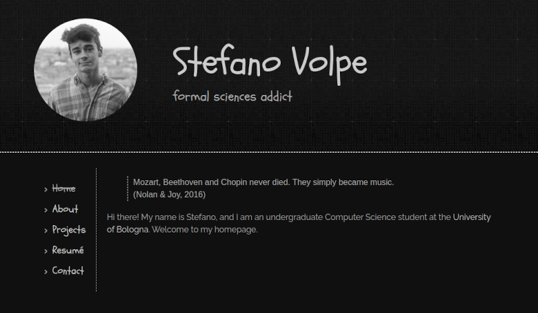Codingame
My submissions for Codingame competitions.
Grades to Reports
A bot designed specifically to fill in students' reports (from Google Sheets to Google Docs).
Telegrindr
A Telegram bot to bring a Grindr-like experience to your groups. Except for the freemium policy, that is.
Ciao!
Ciao! allows people taking part in the same event to exchange contacts via QR code. It is a lightweight, no-nonsense web application.
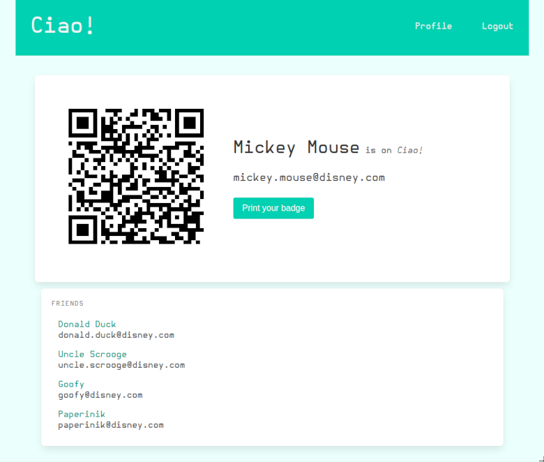astro-catalog
Statistical analysis on a catalog of galaxies.
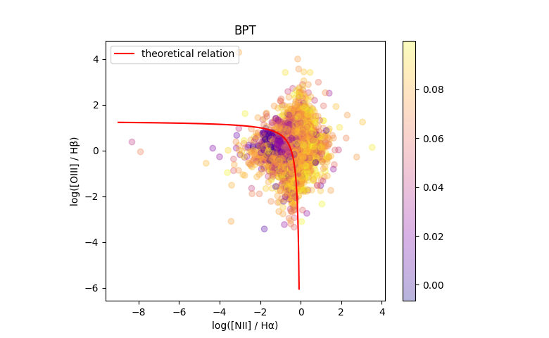High School
Second Year
kernighan-ritchie-the-c-programming-language
Exercises presented in Brian W. Kernighan, Dennis M. Ritchie, "The C Programming Language", 2nd ed.
Third Year
stroustrup-the-c-plus-plus-programming-language
Exercises presented on the webpage dedicated to Bjarne Stroustrup, "The C++ Programming Language", 4nd ed.
Fourth Year
arnold-gosling-holmes-the-java-programming-language
Exercises presented in Ken Arnold, James Gosling, David Holmes, "THE Java Programming Language", 4th ed.
ACR Games Manager
A web application DBMS for Sunday school (aka Azione Cattolica Ragazzi) meant to work as a scoreboard for children playing games in teams.
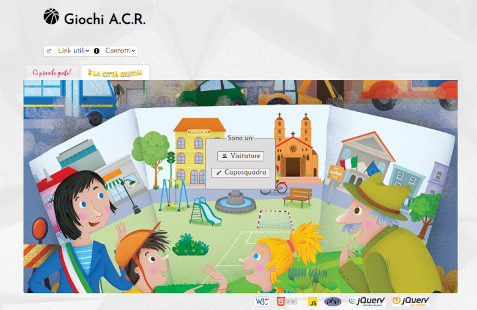Fifth Year
Bosco Test
Bosco tests are designed to assess the morphofunctional characteristics of one's legs muscles as well as their neuromuscular skills.
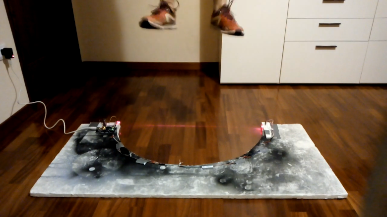Coriana
A Telegram bot interpreter who can work with a finite number of states. They're currently impersonating Coriana, a virtual assistant for families visiting my old high school.
Leo da Vinci
A Telegram bot meant to help high-school students prepare for their final oral exam.
Pandemic Simulator
A scientifically inaccurate 3D pandemic simulator.
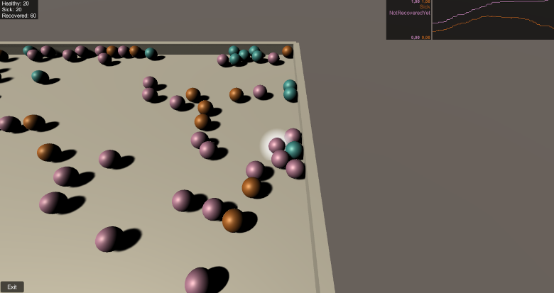App Oriani
A mobile app for the students at Liceo Scientifico "Alfredo Oriani" in Ravenna.
University
First Year
Informabot
A Telegram bot to assist other undergraduate Computer Science students at the University of Bologna.
unibo-11925-computer-architecture
Exercises and projects for the University of Bologna Computer Architecture course (a.y. 2020-21).
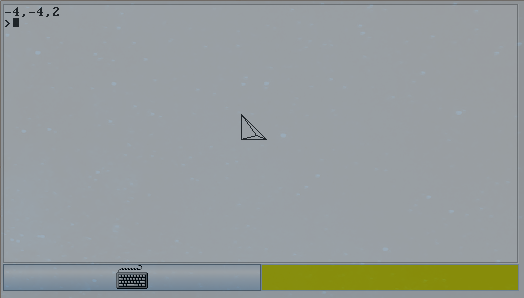Mastro Nando
A Visual Studio Code extension for Nand2Tetris development based on Zohar Lee's "Nand2Tetris Tools".
unibo-93283-logics-for-informatic
Exercises for the University of Bologna Logics for Informatic course (a.y. 2020-21).
Midlands Graduate School 2021
Exercises for the Midlands Graduate School (MGS) in the Foundations of Computing Science (2021).
unibo-00819-programming
Exercises for the University of Bologna Programming course (a.y. 2020-21).
Overengineered
Project for the University of Bologna Programming course (a.y. 2020-21).
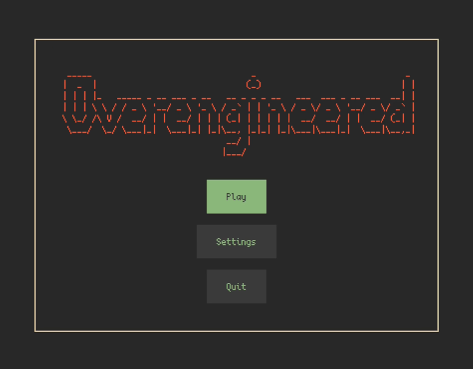unibo-37635-data-structure-and-algorithms
Exercises for the University of Bologna Data Structure and Algorithms course (a.y. 2020-21).
🅼🐵🅽🅺ey
Project for the University of Bologna Data Structure and Algorithms course (a.y. 2020-21).
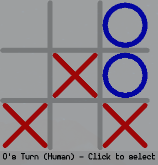Second Year
unibo-02023-numerical-computing
Exercises for the University of Bologna Numerical Computing course (a.y. 2021-22).
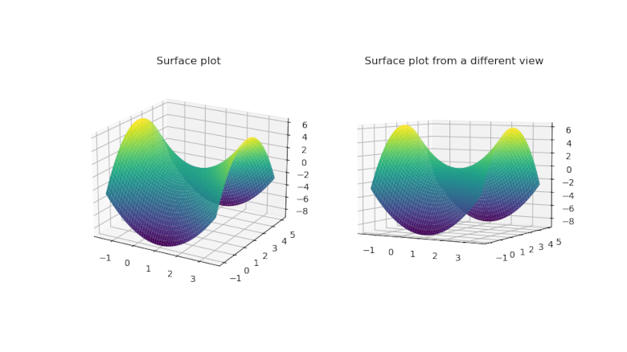Image Restoration
Project for the University of Bologna Numerical Computing course (a.y. 2021-22).
unibo-13477-combinatorial-optimisation
Exercises for the University of Bologna Combinatorial Optimisation course (a.y. 2021-22).
unibo-93315-computer-networks
Exercises for the University of Bologna Computer Networks course (a.y. 2021-22).
unibo-08574-operating-systems
Exercises for the University of Bologna Operating Systems course (a.y. 2021-22).
PandOS+
PandOS+ is a simple operating system for the MIPS architecture.
unibo-88566-web-technology
Exercises for the University of Bologna Web Technology course (a.y. 2021-22).
abelson-sussman-sussman-structure-and-interpretation-of-computer-programs
Exercises presented in Abelson, Harold, et al. "Structure and Interpretation of Computer Programs". 2nd ed.
Third Year
unibo-90107-databases
Exercises for the University of Bologna Databases course (a.y. 2022-23).
unibo-90106-software-engineering
Exercises for the University of Bologna Software Engineering course (a.y. 2022-23).
unibo-93319-introduction-to-machine-learning
Exercises for the University of Bologna Introduction to Machine Learning course (a.y. 2022-23).
Birdazzone
Project for the University of Bologna Software Engineering course (a.y. 2022-23).
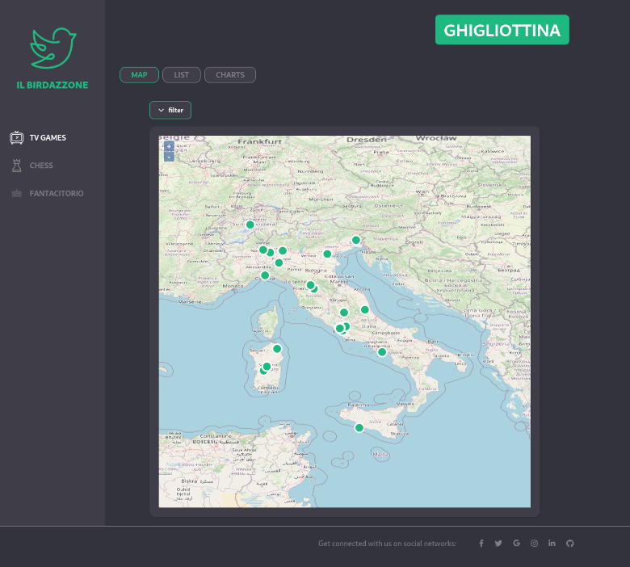faDBula
Project for the University of Bologna Databases course (a.y. 2022-23).
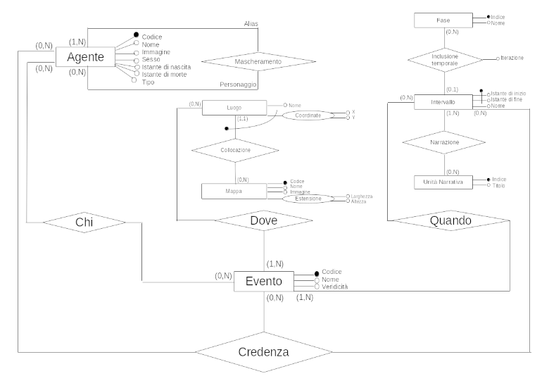Polar Express
Project for the University of Bologna Introductory Machine Learning course (a.y. 2022-23).